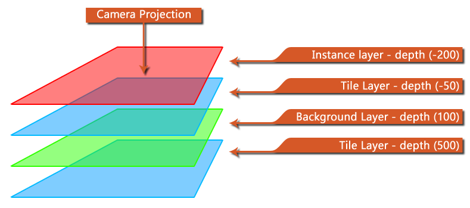

Puede usar esta función para obtener el valor de profundidad asociado con una capa determinada. Usted proporciona la identificación de capa (que obtiene cuando crea la capa usando layer_create() ) o el nombre de la capa (como una cadena - esto tendrá un impacto en el rendimiento) y la función devolverá la profundidad de las capas como un número real. Tenga en cuenta que la profundidad se define como mayor cuanto más "lejos" de la cámara y más "más cerca" de la cámara, por lo que si tiene tres capas con profundidades -100, 0, 100, las capas dibujarán en el orden 100, 0, -100, de modo que la capa "superior" (es decir, la más cercana a la vista de la cámara y así dibujada sobre todo lo demás) será la capa con la profundidad -100.
La siguiente imagen muestra un esquema de cómo funciona la profundidad para las capas: 
Tenga en cuenta que si proporciona un valor de ID de capa no válido, obtendrá un error.
layer_get_depth(layer_id)
Argumento Descripción layer_id El valor ID único de la capa para obtener la profundidad de (o el nombre de la capa como una cadena)
Real
if layer_get_depth(global.temp_layer) != -100
{
layer_destroy(global.temp_layer);
global.temp_layer = layer_create(-100);
}
El código anterior comprueba la profundidad de una ID de capa almacenada en una variable global y, si no es -100, destruye la capa y la vuelve a crear a la profundidad de -100.